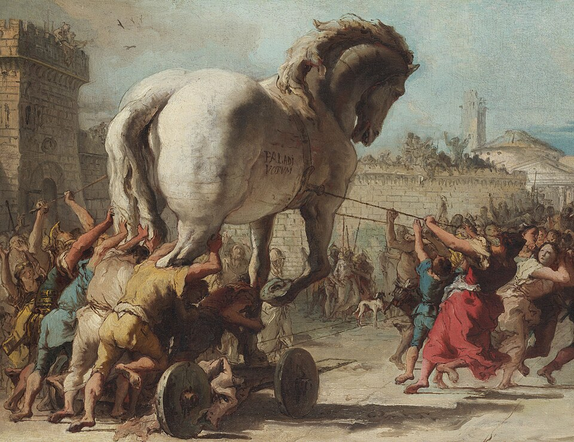
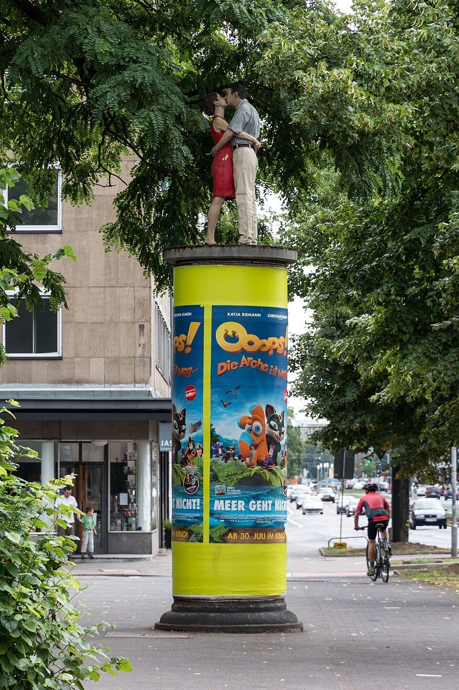
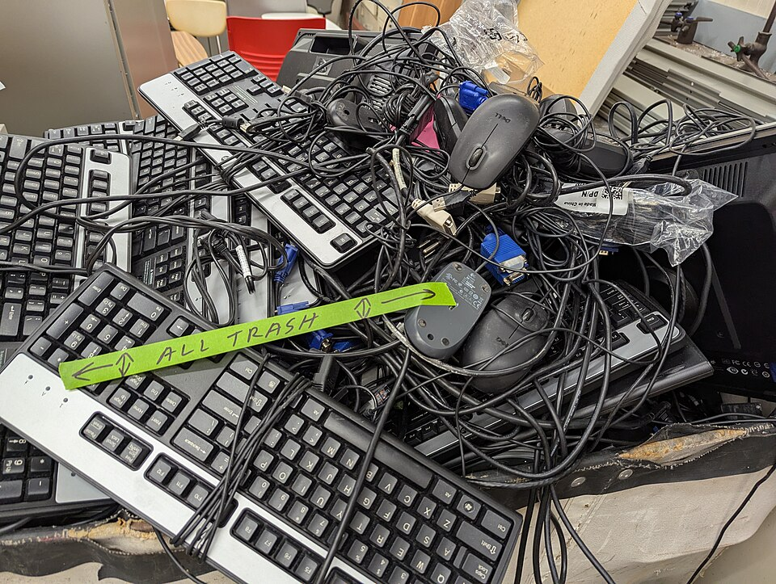

blandinejoannic
blandinejoannic
Good morning!
Nur das Schöne wird die Welt retten!
Fjodor Dostojewski
Nicht verzagen, Doc Alvers fragen!
Informatik — Grundkurs 11
Software, der man trauen kann
Woher Programme kommen, womit wir bezahlen — und was Geräte die Umwelt kosten
Nicht verzagen, Doc Alvers fragen!
Kapitel 01
Herkunft prüfen
Trojaner, Hintertüren, Signaturen

Nicht verzagen, Doc Alvers fragen!
Wo wir stehen
Letzte Woche: Strategien zur Datensicherheit — baulich, technisch, organisatorisch, personell
Heute die Frage davor: Welcher Software vertrauen wir überhaupt?
Dazu die Folgen digitaler Medien für Wirtschaft, Gesellschaft und Umwelt
Leitfrage: Woran erkenne ich vertrauenswürdige Software — und was kostet meine Mediennutzung wirklich?
Nicht verzagen, Doc Alvers fragen!
Trojaner und Hintertür
Trojaner
tarnt sich als nützliches Programm
enthält eine versteckte Schadfunktion
der Nutzer installiert ihn selbst
benannt nach dem Trojanischen Pferd
Back-Door (Hintertür)
ein verborgener Zugang, der die normale Anmeldung umgeht
vom Hersteller eingebaut oder von Angreifern
oft von einem Trojaner nachgeladen
von außen kaum zu erkennen
Nicht verzagen, Doc Alvers fragen!
Woher kommt die Software?
Vertrauenswürdig: die Seite des Herstellers oder das geprüfte Verzeichnis des Betriebssystems
Downloadportale bündeln Installer oft mit Zusatzsoftware
Links aus Foren oder Werbeanzeigen sind kein sicherer Weg
Prüfsumme: zeigt, ob die Datei unverändert angekommen ist
Der Vergleichswert muss aus einer anderen, sicheren Quelle stammen
Nicht verzagen, Doc Alvers fragen!
Signatur und offener Quelltext
Eine signierte Anwendung weist per digitaler Signatur ihre Herkunft nach
Das Betriebssystem prüft beim Start: Herausgeber bekannt, Datei unverändert?
Über die Qualität der Software sagt die Signatur nichts
Quelloffen: Der Quelltext kann unabhängig geprüft werden
Einsehbar heißt aber nicht automatisch geprüft — Fehler und Updates gibt es hier wie dort
Nicht verzagen, Doc Alvers fragen!
Wenn die Quelle selbst befallen ist
Supply-Chain-Angriff: Die Schadfunktion kommt mit einem Update oder einer Komponente, der man vertraut
Signatur und Prüfsumme helfen dann nicht — das Paket stammt ja wirklich vom Hersteller
End of Life: Der Hersteller liefert keine Sicherheitsupdates mehr, bekannte Lücken bleiben offen
Die ehrlichste Antwort auf „Ist diese Software sicher?“: nach heutigem Stand ohne bekannte Lücken — mehr lässt sich nicht sagen
Nicht verzagen, Doc Alvers fragen!
Kapitel 02
Daten als Währung
Apps, Werbung, Geschäftsmodelle

Nicht verzagen, Doc Alvers fragen!
Vor der Installation einer App
Die wichtigste Frage: Welche Berechtigungen verlangt sie — und wozu braucht sie diese?
Eine Taschenlampen-App braucht keine Kontakte
Unpassende Berechtigungen sind das deutlichste Warnzeichen — Bewertungen lassen sich kaufen
Telemetrie: Nutzungsdaten, die eine Anwendung an den Hersteller sendet
Umfang und Zweck stehen in der Datenschutzerklärung, vieles lässt sich abschalten
Nicht verzagen, Doc Alvers fragen!
Womit bezahlen wir kostenlose Dienste?
Betrieb und Entwicklung kosten Geld — bezahlt wird mit Daten und Aufmerksamkeit für Werbung
Die Frage lautet immer: Womit verdient dieser Dienst?
Dark Pattern: eine Gestaltung, die zu einer Entscheidung drängt, die man so nicht wollte
Beispiel: „Zustimmen“ groß und bunt, „Ablehnen“ grau und versteckt
Werbeblocker schützen vor Schadcode aus Werbenetzen — und entziehen Angeboten die Finanzierung
Nicht verzagen, Doc Alvers fragen!
Wirtschaftliche Bedeutung
Unter den wertvollsten Unternehmen der Welt sind heute überwiegend Technologiekonzerne
Werbung ist das Kerngeschäft von Suchmaschinen und sozialen Netzwerken
Netzwerkeffekt: Je mehr Menschen eine Plattform nutzen, desto wertvoller wird sie
Wer die Aufmerksamkeit bündelt, hat Marktmacht — über Preise, Regeln und Sichtbarkeit
Nicht verzagen, Doc Alvers fragen!
Pro und Kontra
Pro: Meinungsvielfalt
jede und jeder kann veröffentlichen
Nachrichten verbreiten sich schnell, auch aus Krisengebieten
Minderheiten finden Gehör
Missstände werden öffentlich
Kontra: Gefahren für den Rechtsstaat
Falschmeldungen verbreiten sich oft schneller als ihre Richtigstellung
Hassrede schüchtert ein und verdrängt Stimmen
Desinformation kann Vertrauen in Wahlen und Gerichte beschädigen
Nicht verzagen, Doc Alvers fragen!
Software in der Schule
Zentral ist: Werden personenbezogene Daten verarbeitet — und auf welcher Rechtsgrundlage?
Auftragsverarbeitung: Ein Dienstleister verarbeitet Daten im Auftrag und nach Weisung
Verantwortlich bleibt die Schule — ein Vertrag regelt Zweck, Umfang und Schutzmaßnahmen
Lokal betrieben: Die Daten bleiben im Haus, Betrieb und Sicherung trägt die Schule selbst
Cloud: nimmt Arbeit ab und gibt Kontrolle aus der Hand — eine Abwägung, keine Glaubensfrage
Nicht verzagen, Doc Alvers fragen!
Kapitel 03
Der Fußabdruck
Ökologisch und sozial verträglich

Nicht verzagen, Doc Alvers fragen!
Wo der Fußabdruck entsteht
Den größten Teil der Umweltlast eines Smartphones verursacht die Herstellung, nicht das Laden
Abbau seltener Rohstoffe und Fertigung dominieren die Bilanz
Ein Jahr längere Nutzung wiegt deshalb schwerer als sparsames Laden
Auch Netze und Rechenzentren brauchen Strom — Streaming in hoher Auflösung überträgt mehr Daten
Nicht verzagen, Doc Alvers fragen!
Länger nutzen, richtig entsorgen
Reparieren und Weitergeben verlängert die Nutzungsdauer
Elektrogeräte gehören nicht in den Hausmüll — Wertstoffhöfe und viele Händler nehmen sie zurück
Aus Altgeräten lassen sich Rohstoffe zurückgewinnen — aus der Schublade nicht
Nachhaltige Software läuft auch auf älteren Geräten und zwingt nicht zum Neukauf
Software treibt den Gerätewechsel oft stärker an als Verschleiß
Nicht verzagen, Doc Alvers fragen!
Sozial verträglich
Rohstoffabbau und Fertigung finden oft unter harten Arbeitsbedingungen statt
Auch das Moderieren von Inhalten in sozialen Netzwerken ist belastende Arbeit
Siegel und Herstellerangaben geben erste Hinweise
Sozial verträglich heißt: Arbeitsbedingungen bei Herstellung und Betrieb mitdenken
Nicht verzagen, Doc Alvers fragen!
Gesundheitsbewusst nutzen
Bildschirmpausen: Augen und Nacken brauchen Abwechslung — zwischendurch in die Ferne schauen
Unwichtige Benachrichtigungen abschalten — ständige Unterbrechungen kosten Konzentration
Das Handy nachts aus dem Schlafzimmer: helles Licht am Abend kann das Einschlafen stören
Bewusst entscheiden, wie viel Zeit wofür — Bildschirmzeit-Funktionen helfen dabei
Nicht verzagen, Doc Alvers fragen!
Vertrauenswürdige Software kommt aus geprüfter Quelle, verlangt nur passende Rechte und bekommt Updates — und am nachhaltigsten ist ein Gerät, das lange genutzt wird.
Merksatz
Nicht verzagen, Doc Alvers fragen!
Fun Facts
Der Name Trojaner ist eigentlich falsch: Im Trojanischen Pferd saßen die Griechen, nicht die Trojaner
2024 wurde eine Hintertür im Werkzeug xz entdeckt, kurz bevor sie viele Linux-Server erreichte — aufgefallen war einem Entwickler, dass Anmeldungen rund eine halbe Sekunde zu lange dauerten
2022 fielen laut UN-Bericht weltweit 62 Millionen Tonnen Elektroschrott an — nicht einmal ein Viertel wurde nachweislich recycelt
Seit Ende 2024 schreibt die EU USB-C als einheitlichen Ladeanschluss für neue Handys vor
Nicht verzagen, Doc Alvers fragen!
Eure Aufgabe
Softwarevergleich im PC-Kabinett: zwei Programme für denselben Zweck nach Kriterien bewerten — Quelle, Berechtigungen, Updates, Datenschutz, Kosten
Pro-und-Kontra-Debatte: Stärken soziale Netzwerke die Meinungsvielfalt — oder gefährden sie den Rechtsstaat?
Digitale Nachhaltigkeit: Wie lange nutzt ihr euer Smartphone — und was würde die Nutzung verlängern?
Zum Schluss: Aufgaben (20) auf der Planseite — Lösung pro Aufgabe zum Aufklappen
Nicht verzagen, Doc Alvers fragen!